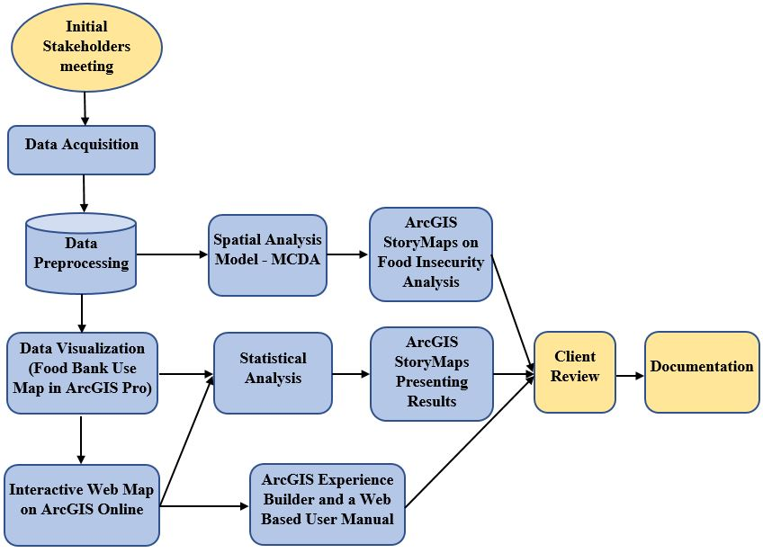
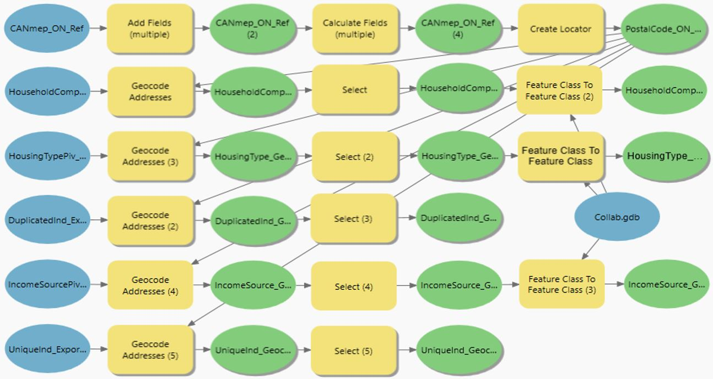
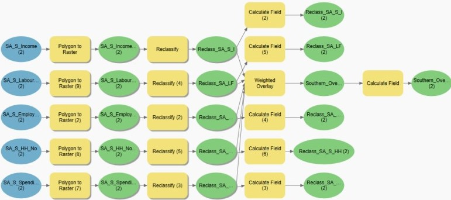
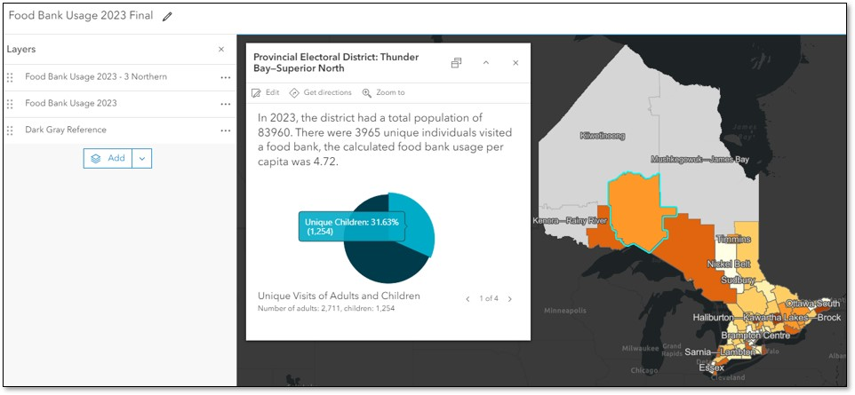

METHODOLOGY
OVERALL PROJECT WORKFLOW
The project adopted the agile project management method. Agile development is an iterative software development process that prioritized short term outputs that are modified over time in response to client feedback. Over the course of project, a substantial quantity of client input was obtained, enabling the team to adjust to changes and involve the client’s requirements in the decision-making process.
Data Pre-Processing
Geocoding is the process of converting addresses into geographic coordinates, allowing them to be positioned on a map. This process was accomplished using ArcGIS Pro. To achieve this, a 6-digit postal code shape file across Ontario was utilized as the reference layer to create a locator. The Create Locator geo-processing tool required mandatory Forward Sortation Area (FSA) and Local Delivery Unit (LDU) fields. It necessitated splitting the 6-digit postal code field into the first 3 digits (FSA) and the last 3 digits (LDU). The Add Fields and Calculate Fields tools were used, with the sample expression “!POSTALCODE![:3]” to extract the first three digits of the postal codes, creating two new fields: FSA and LDU. The raw data criteria were imported into ArcGIS Pro as five separate tables. The Geocode Addresses tool utilized the previously created locator and geocoded the five criteria into x-y coordinates based on the postal codes field. This process successfully converted the tables into five point feature classes.
After importing the data in ArcGIS Pro, the projection was adjusted to Lambert Conformal Conic projection. To facilitate a more accurate analysis of food insecurity through Multi Decision Criteria Analysis, we partitioned the province of Ontario into northern and southern parts. This division was essential because the population was not uniformly distributed in the two regions, particularly with the southern section being highly dense. The northern part of Ontario comprised 9 electoral ridings, while the southern part comprised 112 federal ridings.
Spatial Analysis on Food Insecurity
The purpose of the analysis was to identify the area prone to hunger and food insecurity. After importing the factors in ArcGIS Pro, the study area was divided into northern and southern regions. Then, a raster surface of all five factors were created using the Polygon to Raster tool. Subsequently, we categorized the data into a 1 to 9 analytical hierarchy process (AHP) schema with 1 being the least suitable and 9 being the most suitable conditions. With the natural break method, the criteria were divided into nine classes, and the results were rounded up. These suitability ratings were coded to reflect the relative suitability within each criterion.
Statistical Analysis on Food Bank Usage
The statistical analysis focused on identifying and comparing food bank usage across 124 electoral ridings between 2021 and 2023. It also examined the total population variation within these ridings during the same period, highlighting the ridings with the highest and lowest populations. The study further investigated the Ontario Works category percentages across these electoral areas for the years 2021 and 2023, identifying both the highest and lowest percentages. Average food bank usage per capita and Ontario Works statistics were calculated for each of the 124 Ontario electoral ridings over the specified years. Additionally, percentage changes in Ontario Works averages from 2021 to 2023 and population growth percentages during the same period were computed.
Cartographic Design
The primary cartographic output of this project were the food bank usage map and the food insecurity map. Choropleth thematic map styling were used for rendering data for individually enumerations units. Data was generally grouped into classes and each group of data is organized as a ratio value. A graded orange colour series was used to show least intensity to greatest intensity depiction using a light to dark colour pattern. Low food bank usage per capita intensity was depicted by light color whereas, the high food bank usage per capita intensity was depicted by dark color. The Light Gray Canvas basemap provided a clear contrast. For the visualization of the food insecurity layer, we employed a red-white-blue color schema with nine classes. In this color ramp, dark red indicated a highly vulnerable area, while darker blue signified region of higher security.
Web Development and Enterprise Technology
Sharing web platforms and utilizing enterprise technology allowed for convenient access, editing, and management between accounts and users. After the maps were created in ArcGIS Pro, the final 2021 and 2023 food bank usage feature layers were shared on the ArcGIS Online platform. A web map was created with the hosted layers, incorporating interactive features such as labeling, filtering, and pop-ups. The interactive web maps allowed users to explore the data in detail. They provided detailed information for each riding boundary, enabling stakeholders to access and analyze the data easily.
The layers and files were later transferred to the client's ArcGIS account from our Fleming school account to facilitate seamless future management.
Additionally, other Esri Suite platforms were utilized for further demonstration purposes.